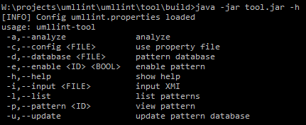
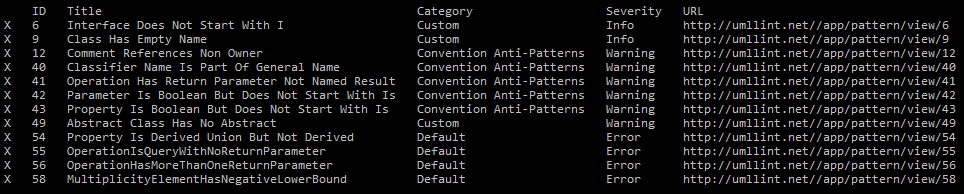
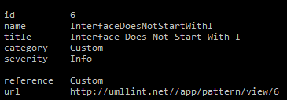
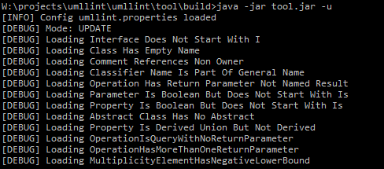
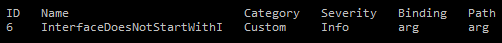
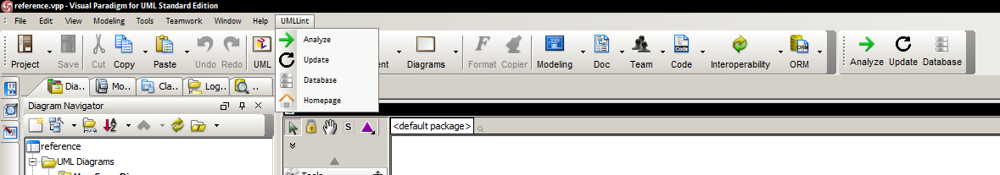
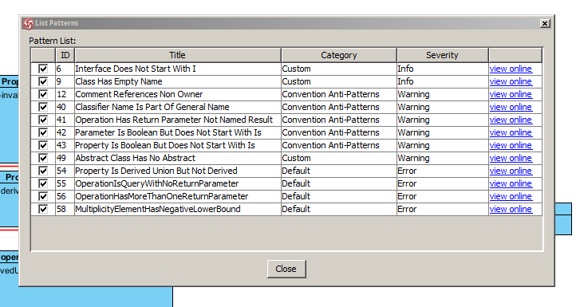
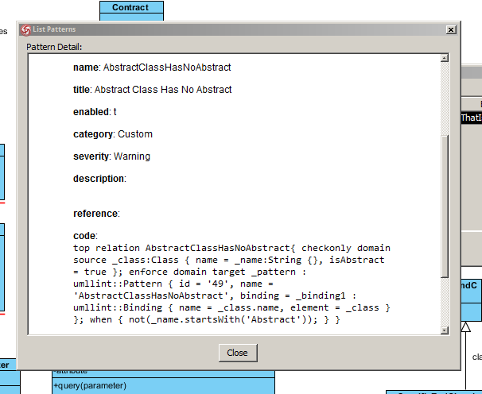
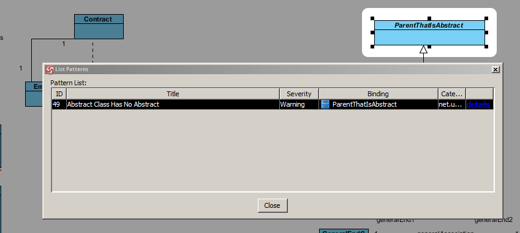

Table of Contents
- 1. Installation
- 2. Configuration
- 3. User Guide
Installation
Github
The UMLLint project is hosted on GitHub, you can reach it at https://github.com/idlouhy/umllint. Feel free to download the source code or submit issues!Command Line Tool - Source
- 1a. Download the source distribution from the GET page
- 1b. Clone the source from GitHub
- 2. Unpack the archive. You should see the build.xml file in the root directory.
- 3. The Command Line Tool uses the Ant build system. Navigate to the source root and invoke Ant.
- 4. The built binary version is in the build subdirectory
- 5. Continue with the tutorial for the binary version.
Command Line Tool - Binary
- 1. Download the binary distribution from the GET page
- 2. Unpack the archive. You should see the file tool.jar and additional folders and configuration files.
- 3. Configure the tool using the umllint.properties file.
- 4. Run the tool: java -jar tool.jar
- 5. Continue with the usage tutorial.
Visual Paradigm Plugin - Source
- 1a. Download the source distribution from the GET page
- 1b. Clone the source from GitHub
- 2. Unpack the archive. You should see the build.xml file in the root directory.
- 3. The Visual Paradigm Plugin uses the Ant build system. Navigate to the source root and invoke Ant.
- 4. The built and prepared plugin package is in the build directory in the folder net.umllint.plugin.vp
- 5. Continue with the tutorial for the binary version.
Visual Paradigm Plugin - Binary
- 1. Download the source distribution from the GET page
- 2. The built and prepared plugin package is in the directory net.umllint.plugin.vp
- 3. Locate your local Visual Paradigm Standard installation. Make sure there is a plugin directory in the root directory of the installation
- 4. Copy the plugin package net.umllint.plugin.vp directly to the plugin directory in your Visual Paradigm installation.
- 5. You may want to add permissions for your user account to write inside the plugin filder
- 6. Open the plugin package directory and configure the plugin in the umllint.properties file.
- 7. Start or restart your Visual Paradigm. New menu and toolbar icons should appear.
- 8. Continue with the usage tutorial.
Server - Source
- 1a. Download the source distribution from the GET page
- 1b. Clone the source from GitHub
- 2. Unpack the archive. You should see the build.gradle file in the root directory.
- 3. Navigate to the directory sql. Connect to your PostgreSQL database server. Execute the database, tables and data SQL scripts.
- 4. The Server component uses the Gradle build system. Invoke Gradle by calling ./gradlew (or gradle.bat) in the root directory.
- 5. Navigate to the directory src/main/resources. Configure the connection to the database in the file local.properties (for use on the Microsoft Windows workstation) or production.properties (used on the Linux Server).
- 6. Call ./gradlew war build the WAR package. The results are in the build/libs directory.
- 7. Locate the file app.war and deploy it on your web server.
Configuration
This section explains the configuration options. The best is to leave the properties file untouched and use the default configuration.- umllint.server: The server URL. (default http://umllint.net/)
- umllint.server.api: The server API URL. (default http://umllint.net/app/api)
- umllint.file.input: Input file for command line tool. (default /workspace/input.xmi)
- umllint.file.workspace: The temporary workspace directory - needs to be writable! (default /workspace)
- umllint.file.library: The file with local QVT functionality. (default /resources/library.qvt)
- umllint.file.model.uml: The input UML meta-model in Ecore. (default /resources/uml.ecore)
- umllint.file.model.umllint: The output UMLLint meta-model in Ecore. (default /resources/umllint.ecore)
- umllint.file.patterns: The pattern database file. (default /resources/patterns.xml)
- umllint.debug.qvt: The debug mode of QVT Engine - set true/false. (default true)
User Guide
Command Line Tool
The Command Line Tool is a terminal application and can be controlled using arguments. This section explains basic use of the tool. You can display the tool with the argument -h.
$ java -jar umllint-tool.jar -h
The tool accepts XMI as a input. You can export the UML diagram as XMI from variety of tool. However the tool was tested on Visual Paradigm and Eclipse Modeling. The input file can be set in the configuration file. You can set the input file using the argument -i
$ java -jar umllint-tool.jar -i test/input.xmi
The tool uses a pattern database for UML correctness evaluation. You can list the currect local database contents using the argument -l. The pattern is identified by the ID and has a category and severity. The list also contains a link to the server that contains more information.
$ java -jar umllint-tool.jar -l
You can print pattern details using the argument -p and the pattern ID.
$ java -jar umllint-tool.jar -p 6
To update the local pattern database from the server, call the tool with the argument -u. The tool connects to the server, performs an update and prints the contents.
$ java -jar umllint-tool.jar -u
Finally you can execute the correctness analysis by the argument -a. The results are printed into the console. The column Binding contains the name of the element that has issues. You can view more information about the pattern by the mentioned -p or -l arguments.
$ java -jar umllint-tool.jar -a
Visual Paradigm Plugin
The functionality of the Visual Paradigm plugin is similar to the Command Line Tool. However it does not require the input from the user, it uses the current Visual Paradigm model instead.
The plugin integrates itself inside the Visual Paradigm user interface. All available functions are listed in the main menu UMLLint. Some of the functions are available also on the toolbar.
The Database action opens a dialog with the list of patterns available locally. The last column contains a link to the web page that contains more information about the pattern.
You can double click on the view online link to open the pattern detail in another dialog. It sources the content directly from the server, so internet connection is required.
The analyze action will start the pattern correctness check. The results are displayed in a dialog window. The column Binding displays an element reference to the diagram. Double clicking the element reference will highlight it in the active diagram.
